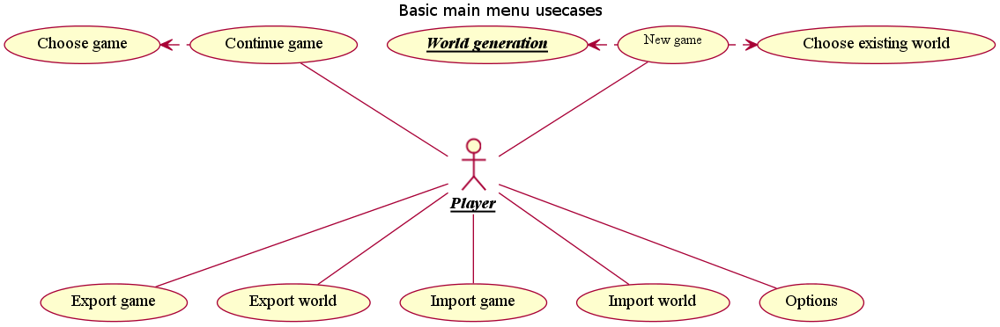
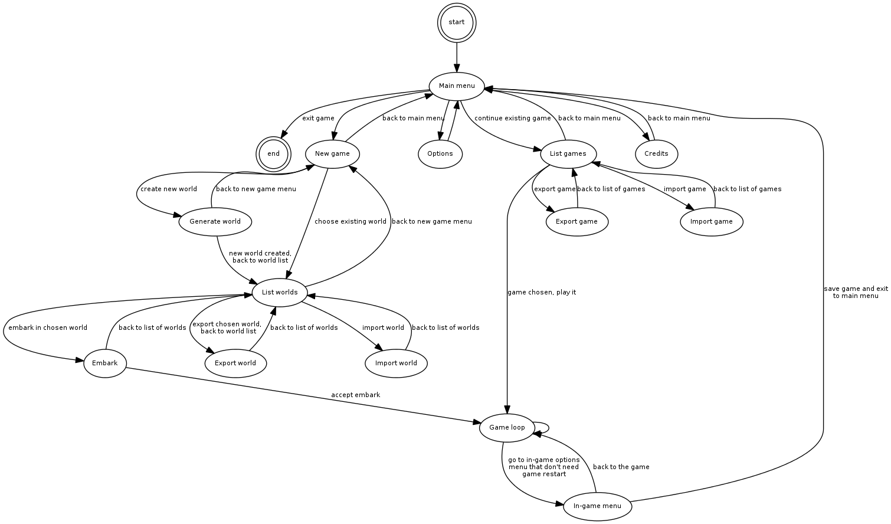
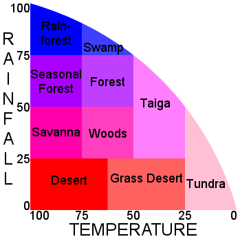

Дизайн
Table of Contents
1 Требования
Здесь описаны основные решения, которые в процессе разработки не подлежат изменению.
1.1 Требования к конечному продукту
1.1.1 Приоритетные
- Однопользовательская фэнтези-стратегия, по совместительству песочница и симулятор бога.
- Мир генерируется случайным образом, кроме того объекты, персонажи, свойства и материалы, тоже могут создаваться случайным образом (учитывая ряд ограничений конечно же). Объемный мир.
- df-подобная по части безумно высокой детализации игрового мира.
- Практически полное отсутствие игровой документации. В справке будут описаны лишь азы по взаимодействию с интерфейсом.
- Сложная система крафта/производства.
- Противник в виде других популяций, которые регулярно организуют осады и рейды.
- Сложная экономическая составляющая (корованы и так далее).
- Сложная социальная составляющая популяция (отношения между особями, эмоции, психологическое состояние).
- Сложная система существ. Никаких хитпоинтов - максимально реалистичная боевая система и система повреждений.
- Общие концепции рогаликов.
- Политическая составляющая (отношения между цивилизациями, послы, заговоры, нобли, мандаты).
- Открытые исходники и открытые игровые ресурсы. MIT/BSD лицензии или GPLv3 - пока не ясно.
- Желательно избежать использования магии.
- Наличие крупных (на порядки крупнее обычного юнита) персонажей.
- Наличие встроенной lisp-среды.
- Наличие системы вызова команд в духе emacs (M-x <command> - с автодополнением).
1.1.2 Менее приоритетные
- Ведутся записи исторических событий, многие вещи очень детально логгируются, например битвы.
- Мультиязычность (Русский и Английский минимум). Должна быть гибкая система добавления локализаций (сразу стоит отметить, что предполагается два вида локализаций: простая и сложная. Для каждой локализации в необходимом месте возвращается предварительно заданная строка текста согласно переданному в функцию коду локализации (ru, eng, de). Сложная - движок для морфологического анализа/синтеза, правильная генерация числительных и другие моменты, связанные с естественными языками. Понадобяться part of speech tagger'ы и другие подходы для генерации текста на естественном языке.).
- Химическая подсистема (возможность вступления каких-то объектов и материалов в химические реакции и получение дополнительных свойств(= долговременные) или эффектов(= кратковременные).
1.2 Требования к процессу разработки
- Высокая модульность. Необходима слабая связанность модулей в системе, чтобы можно было безболезненно заменять их, лишь соблюдая интерфейс (API).
- Следование идеи MVC и другим паттернам, отделяющим данные, логику и интерфейс.
- Code convention required.
- Максимально возможное покрытие юнит-тестами.
2 Основные подсистемы
2.1 Игра (игровая подсистема)
2.1.1 Требования
- простое меню, минимум переходов
- возможность загрузки, выгрузки миров и игр.
- настройки генерации нового мира
2.1.2 Usecase

Типичные варианты использования (главного меню).
Основные варианты использования:
- continue game (продолжить игру) - по сути пустое состояние, мнгновенный переход к выбору игры.
- choose game (выбор игры) - пользователю предоставляется список существующих игр с какой-то дополнительной информацией: название мира, последнее время пребывания в игре, суммарное время проведенное в игре, название игры (крепости/экспедиции), имя командира (экспедиции), текущая дата, размер популяции и какие-то другие общие показатели.
- new game (новая игра) - тут пользователь решает: создать новый мир или выбрать уже существующий.
- world generation (генерация нового мира) - зерно мира (seed), море настроек, переключателей, параметров, позволяющих создать максимально неповторимый мир. После того как пользователя устроят все параметры и он выберет пункт "генерировать"("generate") и этот весьма долгий процесс завершится, тогда пользователь перейдет к меню "new game".
- choose existing world (выбор мира) - пользователю предоставляется список существующих миров с какой-то дополнительной информацией: название мира, текущая дата и другие.
- export game (экспорт игры) - пользователь выбирает игру из списка и все состояние игры и мира записывается в указанный файл.
- export world (экспорт мира) - аналогично экспорту игры.
- import game (импорт игры) - пользователь выбирает файл из которого будет считано все состояние игры и мира.
- import world (импорт мира) - аналогично импорту игры.
- options (настройки) - очевидно. Пока не детализирую.

Базовая диаграмма состояний игры (graphviz).
Основные состояния (состояния выделены жирным, пункты меню выделены курсивом, стрелки "->" показывают в какое состояние переходит игра по выбранному пункту меню):
- Start -> Main menu
- Main menu - главное меню. Содержит следующие пункты:
- новая игра -> New game
- продолжить игру -> List of games
- настройки -> Options
- выход -> End
- об авторах -> Credits
- In-game menu - меню, которое доступно во время игры (в состоянии
Game loop). Тут могут быть какие-то настройки интерфейса, биндинга
клавиш и другое. Содержит следующие пункты меню:
- настройки интерфейса
- настройки клавиш
- вернуться в игру -> Game loop
- сохранить и выйти в главное меню -> Main menu
- New game - создание новой игры. Тут пользователь выбирает из
следующий пунктов меню:
- создать новый мир -> World generator
- список миров -> List of worlds
- вернуться в главное меню -> Main menu
- List of worlds - выбор мира из списка существующих. Содержит
следующие пункты меню:
- снарядить экспедицию и выбрать место высадки\embark -> Embark
- экспортировать мир -> Export world
- импортировать мир -> Import world
- вернуться в меню новой игры -> New game
- World generator - генератор мира. Содержит тучу настроек и
заветную кнопку/пункт меню "создать"/"generate".
- генерировать -> List of worlds
- вернуться в меню новой игры -> New game
- Embark - тут задаются параметры начала экспедиции. Содержит
следующие пункты меню:
- начать игру -> Game loop
- вернуться к списку миров -> List of worlds
- List of games - продолжить существующую сессию игры (выбор из
списка). Содержит следующие пункты меню:
- продолжить игру -> Game loop
- экспортировать игру -> Export game
- импортировать игру -> Import game
- вернуться в главное меню -> Main menu
- Options - настройки. Содержит следующие пункты:
- вернуться в главное меню -> Main menu
- Game loop - самое главное состояние. Главный игровой
цикл. Содержит следующие пункты меню:
- игровое меню -> In-game menu
- вернуться в игру -> Game loop
- Credits - об авторах и другие коментарии. Содержит следующие
пункты:
- вернуться в главное меню -> Main menu
- Export game - тут находятся настройки экспорта. Содержит следующие
пункты:
- экспортировать
- вернуться к списку игр -> List of games
- Import game - Содержит следующие
пункты:
- импортировать
- вернуться к списку игр -> List of games
- Export world - Содержит следующие
пункты:
- экспортировать
- вернуться к списку миров -> List of worlds
- Import world - Содержит следующие
пункты:
- импортировать
- вернуться к списку миров -> List of worlds
2.1.3 Главный цикл
2.1.4 Общие рекомендации по проектированию - http://pages.cs.wisc.edu/~psilord/lisp-public/option-9.html
2.2 Интерфейс
2.2.1 SDL / CL-TCOD
2.2.2 Текстовый / Тайловый
2.3 Мир
2.3.1 Полезные статьи
2.3.2 Карта высот - http://www.youtube.com/watch?v=lfOg4KnLgjs
- Алгоритмы генерации шума (noise)
- perlinx
- simplex
- perlinx
- Diamond square - http://habrahabr.ru/blogs/algorithm/111538/
- Полезные ссылки
- Эррозия
- Реки
- Горы
- BSP generation - http://doryen.eptalys.net/articles/bsp-dungeon-generation/
- Pathfinding
- A*
- Dijkstra - http://habrahabr.ru/blogs/algorithm/111361/
- A*
- Field of View
- basic raycasting
- recursive shadowcasting
- diamond raycasting
- precise permissive fov
- restrictive shadowcasting a.k.a. MRPAS
- basic raycasting
2.3.3 Биомы и климат
- Minecraft

График температуры/осадков в зависимости от биома.
Примерная таблица биомов Название Оказываемые эффекты Коментарий Джунгли Болото Сезонный лес Лес Саванна Тайга Пустыня Равнина Тундра Горы
- DF
- Засушливые (Аридные)
- Arctic Ocean (Холодный океан)
- Badlands (Бесплодные земли)
- Glacier (Ледник)
- Mountain (Горы)
- Rocky wasteland (Каменистая пустошь)
- Sand desert (Песчанная пустыня)
- Tundra (Тундра)
- Taiga (Тайга)
- Умеренные
- Temperate Broadleaf forest (Умеренный лиственный лес)
- Temperate Conifer forest (Умеренный хвойный лес)
- Temperate Grassland (Умеренные луга)
- Temperate Freshwater lake (Умеренное пресноводное озеро)
- Temperate Freshwater marsh (Умеренное пресноводное болото)
- Temperate Freshwater swamp (Умеренная пресноводная топь)
- Temperate Ocean (Умеренный океан)
- Temperate Saltwater marsh (Умеренное солёное болото)
- Temperate Saltwater swamp (Умеренная солёная топь)
- Temperate Savanna (Умеренная саванна)
- Temperate Shrubland (Умеренное мелколесье)
- Тропические
- Tropical Dry Broadleaf forest (Тропический сухой лиственный лес)
- Tropical Wet Broadleaf forest (Тропический сырой лиственный лес)
- Tropical Conifer forest (Тропический хвойный лес)
- Tropical Freshwater marsh (Тропическая пресноводная топь)
- Tropical Grassland (Тропические луга)
- Tropical Ocean (Тропический океан)
- Tropical Savanna (Тропическая саванна)
- Tropical Shrubland (Тропическое мелколесье)
- Засушливые (Аридные)
- Terraria
- Леса - Для посадки деревьев необходимы жёлуди, которые падают с деревьев, когда вы их рубите. Замкнутый круг, не так ли? Также, жёлуди можно купить у Дриады. В лесной территории можно найти подземные пещеры, размеры которых не больше 100 футов в глубину
- Пустыни - На самом деле, в пустынях нет ничего интересного, ведь они совершенно бесплодны.
- Океан - На обоих краях каждой карты находятся песчаные пляжи, за которыми расположены огромные массы воды. Чем дальше идёт игрок, тем глубже становится дно. Исследования океана без умения плавать — практически самоубийство, так как можно просто напросто утонуть.
- Подземелье - Подземелье состоит из трёх слоёв (уровней): слой грязи, скалистый слой, каменный слой.
- Парящие острова - массы земли, расположенные в небе (magic?!?).
- Искажение — биом, отличительной особенностью которого является способность к распространению. В большинстве случаев, в мире есть 2-3 Искажения. Искажение спаунит (порождает) высокоуровневых монстров независимо от времени суток, его следует избегать в начале игры. Тёмные блоки (покрытые Искажением) можно очищать ударом оружия или с помощью очистительного порошка. Искажение распространяется только по блокам травы и грязи, так что остановить его можно путём размещения какого-либо блока (кроме грязи) или посадкой подсолнечника. (Подсолнечники можно купить у Дриады или же просто найти) Игрок может найти Семена Искажения, сажая которые вы создадите собственное Искажение (magic?!?).
- Метеорит - послее того, как вы разобьёте Теневую сферу, в планету может врезаться метеорит. (Метеорит может прилететь, даже если вы ничего не разбивали. Вот так.) Метеорит — это маленький по площади, но довольно опасный для низкоуровневых игроков биом. Он состоит из метеоритной руды, высокоуровневого материала, который наносит урон при контакте, если у игрока нет Обсидианового черепа.
- Пещерные джунгли - Подземные джунгли во многом схожи с обычными подземельями, например, в них тоже присутствуют тупики. Но есть и различия: подземные джунгли покрыты растениями (неожиданно?), в них можно найти уникальные предметы, которые находятся в Храмах Джунгей (Jungle Shrines) — небольших зданиях, сделанных из золотых блоков. Найти джунгли не составить труда — просто копайте (хотя в больших мирах придётся покапать намного дольше, чем в средних и маленьких). Очень часто Пещерные Джунгли встречаются рядом с Искажением.
- Данж — это огромное здание, находящиеся недалеко от "края" мира, охватывающее множество слоёв вглубь. Данжы заполнены сундуками с сокровищами и уникальными предметами (например: водяная свеча, книги, цепной фонарь, и т.д.) В маленьких и средних мирах Подземелья могут "разрезать" Ад на несколько частей, тем самым обеспечивая удобный к нему доступ.
- Преисподняя — это биом, который находится в "адском" уровне (ниже, чем уровень моря, приблизительно, на 4500 футов). Вы доберётесь до него после того, как прокопаетесь через третий слой Подземелья (пещеры) — каменный слой. Преисподняя отличается от подземелья иным фоном, сильными врагами и огромным количеством лавы, лавы и ещё раз лавы. Сундуки в Преисподней содержат более редкие артефакты, чем все другие, которые встречаются вам в мире.
- Классификации биомов
Climate is a major factor determining the distribution of terrestrial biomes. Among the important climatic factors are:- Latitude: Arctic, boreal, temperate, subtropical, tropical
- Humidity: humid, semihumid, semiarid, and arid
seasonal variation: Rainfall may be distributed evenly throughout the year or be marked by seasonal variations. dry summer, wet winter: Most regions of the earth receive most of their rainfall during the summer months; Mediterranean climate regions receive their rainfall during the winter months.
- Elevation: Increasing elevation causes a distribution of habitat
types similar to that of increasing latitude.
http://en.wikipedia.org/wiki/Biome#Biome_classification_schemes
- Климат
- Температура
- Погода
- Дождь
- Снег
- Дождь
2.4 Время
2.4.1 Времена года (связано с биомами и климатом)
2.4.2 День / ночь.
2.5 Объекты
2.6 Строительство
2.7 Раскопки
2.8 Существа
2.9 Механизмы и аппараты
2.10 Вещества / материалы
2.10.1 Жидкости
2.10.2 Газы
2.10.3 Метал
2.10.4 Ювелирные изделия
2.10.5 Минералы
2.10.6 Драгоценные камни
2.11 Цивилизации, города, поселки - генерация
3 Полезная инфа
3.1 40 механик для социальных игр - http://habrahabr.ru/blogs/social_networks/114725/
Разработчик игр Раф Костер (Raph Koster) составил всеобъемлющий список базовых правил, на которых основаны социальные отношения в играх (мультиплеер, параллельная игра и т.д.). Эти правила для разработчиков игры заменяют азбуку. Во многом они пересекаются с принципами игровой механики, которые уже обсуждались на Хабре.
Раф Костер приобрёл известность как создатель дизайна Ultima Online и креативный директор проекта Star Wars Galaxies, после чего основал собственную студию.
Данный список является кратким конспектом презентации Костера (190 слайдов).
- Помощь. Простейшая форма мультиплеера — это обычные советы и помощь. Насколько хороши ваши каналы коммуникации? Помощь — это строительный материал всего социального геймплея.
- Статус. Квантификация достижений. Сохранение их в базе данных.
- Гонки. Первый пользователь, который достигает цели, побеждает. На удивление редко встречается. Почему никто не использует гонку для завершения уровня? Вы можете использовать это в сетевых настройках. Социальные игры не тяготеют к гонкам.
- Таблицы лидеров. Все соревнуются асинхронно, параллельно с сохранением истории. Мы видим это в барах.
- Турниры. Разбиение (bracketing) пользователей на группы. Социальные игры склоняются к использованию брекетинга для простого PvP, тогда как он достоин большего.
- Сбор цветов. Вы конкурируете за ресурсы, на постоянно появляются новые.
- Съедение точек. Я съел, ты нет. Потребление ресурсов с нулевой
суммой. 8: Перетягивание каната (tug-of-war). Я могу взять твои вещи, а ты можешь мои. Победитель и проигравший.
- Гандикаппинг. Искусственное уравнивание статуса для обеспечения более равного соревнования.
- Секреты. В теории игр — недостаточная информация. Знание является ценностью. Перетягивание каната. Раздачи карт.
- Последний герой. Мультиплеер до смерти, пока не останется победитель.
- Ставки. Промежуточный статус. Твоя ставка, ты забираешь вещи соперника (деньги) и у кого в итоге остаётся вещь, выигрывает. Где тихие аукционы в социальных играх?
- Ложь. Обман и блеф. Обман работает только против другого игрока, не компьютера. Дезинформация становится игровым приёмом, который даёт преимущество.
- Ставки третьей стороны. Здесь конкуренты участвуют в аукционе за ресурсы третьей стороны.
- Дилемма заключённого. У партнёров нет полной информации, но они в одной команде. Если один сдаётся, оба в проигрыше. Если они держатся вместе, то добиваются успеха. Ты не знаешь, будет ли напарник держаться.
- Кригшпиль. Военная стратегия в виде настольной игры, впервые была использована в 1812 году в Прусской армии: Dungeonmaster, Gamemaster. Судья следит за правилами, Gamesmaster направляет действие, игру. Сейчас мы не делаем слишком много такого управления в социальных играх, но могли бы. В основном действием игры управляют судьи, хотя эту роль можно переложить на гейммастера.
- Роли. Специализация ведёт к появлению различных игр внутри одной группы. Чрезвычайно редко используется в современных играх, редкое исключение — Treasure Isle.
- Объединение в группы и смена ролей внутри групп. Как в «Мафии» один из партнёров неожиданно может стать хищником.
- Ритуалы. Церемонии играют важную роль в человеческой культуре: рождение, свадьба, смерть, повышение уровня внутри игры (выпуск из школы, получение диплома, получение работы), календарные праздники, религиозные праздники.
- Подарки. Тесно связаны с предыдущим пунктом, встречаются практически во время каждого ритуала. Представляют собой передачу вещей от одного игрока к другому для повышения его статуса.
- Взаимность. Игроки отправляют подарок, который им нравится, потому что ожидают его возврата (где кнопка «Вернуть подарок»?).
- Наставники. Обучение человека или передача ему важных знаний. Он получает знания, вы получаете социальный статус как наставник. Укрепляются социальные связи в группе.
- Самовыражение. Демонстрация своего статуса через редкие аксессуары.
- Изгнание из группы через отказ в общих ресурсах.
- Доверие. Степень доверия в зависимости от положения нода в социальном графе или кластере. Прямая связь даёт максимальное доверие. Если один человек максимально доверяет двум людям в кластере, но те не связаны друг с другом напрямую, то между ними доверие существует, но гораздо слабее.
- Гильдии, кланы. Чрезвычайно эффективная структура, объединяющая несколько социальных кластеров. В данный момент в социальных играх слабо используются структуры из сотен и тысяч участников.
- Эксклюзивность. Исходя из сегрегации и геноцида известно, что людям свойственно выделять внутри сообщества элитные группы, обладающие эксклюзивным доступом к избранным вещам. VIP-клубы.
- Гильдия против гильдии. Мы знаем, как большие родственные группы любят уничтожать друг друга. Соревнование. Сражение. Конкуренция.
- Торговля. Формализация выгодных отношений между слишком удалёнными узлами в сети.
- Выборы. Политика — величайшая многопользовательская игра, изобретённая человечеством.
- Репутация, влияние и почёт. Нужно разработать микроплатежи для социальной валюты, чтобы отправитель мог поставить +1, а получатель накапливать эти статусы.
- Общественные вещи. Это похоже на дилемму заключённого, но только в отношении к многим пользователям. Большинство общественных ресурсов не уникальны и могут потребляться всеми (например, чистый воздух).
- Трагедия общин, если ресурсы уникальны и могут быть присвоены кем-то, тогда все остальные остаются в проигрыше.
- Коммьюнити. Ситуация, когда сами пользователи становятся фишками в игре.
- Стратегические гильдии. Объединении в большие группы для решения очень сложных загадок.
- Командная работа. Совместные усилия людей всегда больше, чем работа тех же людей поодиночке.
- Арбитраж. Переходя к экономическим моделям игры, нужно допустить существование арбитража, когда возникают неравномерные количества товара в игре и существует способ оценки и обмена таким товаром.
- Каналы поставки. Каналы обмена товаров и торговых путей.
- Пользовательский контент. Хорошие инструменты для этого: форумы, редакторы изображений, игровые карты, свадьбы и так далее.
- Грифинг. Виртуальная социопатия. Смена правил игры самими игроками и появление новых игровых вселенных.
4 Хаотичный список фич и идей
4.1 Заговоры
Недовольные жители могут объединиться и объявить забастовку, устроить заговор, заняться вредительством, распространять хоас и тантрум.
4.2 Дварфийский язык
- http://www.stormnexus.org/Dwarven_Language
- http://www.guildsite.com/dawi/language.htm
- http://www.fantasist.net/dwarven.shtml
- http://www.scribd.com/doc/17817661/dd-3rd-Edition-Dungeons-and-Dragons-Dwarven-Dictionary
- http://www.angelfire.com/pro/demon_1/dwarven_to_common_dictionary.htm
- http://www.santharia.com/languages/thergerim/thergerim.htm